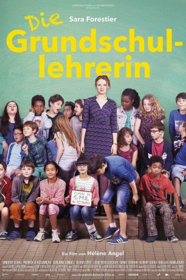

#9091 Die Grundschullehrerin
 
 IMDB-Wertung: 6.6 / 10
IMDB-Wertung: 6.6 / 10  Metascore: 0
Metascore: 0 
Florence Mautret ist Grundschullehrerin aus Leidenschaft. Während sie alles gibt, um ihren Schülern den Weg in eine glückliche und erfolgreiche Zukunft zu ebnen, sieht es privat chaotisch aus. Alleinerziehend, fehlt ihr häufig die Zeit für ihren Sohn, der daher zu seinem Vater ziehen will. Als zudem der kleine Sacha, ein Kind aus schwierigen Verhältnissen, neu in ihre Klasse kommt und ihre volle Aufmerksamkeit fordert, muss Florence einen Weg finden, endlich Ordnung in ihr Leben zu bringen.
Jahr: 2016
Dauer: 101 Minuten
FSK: 0
Land: Frankreich Studio: Alamode FilmTonspuren:
Untertitel:
Auflösung: SD (720x378) Größe: 1198 MB
Genre: Drama
Regisseur: Hélène Angel
Drehbuch: Ursula Gruber
Soundtrack: Philippe Miller
Darsteller:
 Sara Forestier als Florence Mautret
Sara Forestier als Florence Mautret- Nabiha Akkari als Enseignante
- Vincent Elbaz als Mathieu
- Albert Cousi als Denis Mautret
- Ghillas Bendjoudi als Sacha Drouet
- Guilaine Londez als Madame Duru
- Hannah Brunt als Charlie
- Olivia Côte als Marlène Peillard
- Patrick d'Assumçao als M. Sabatier
- Lucie Desclozeaux als Laure
- Denis Sebbah als M. Hadjaj
- Frédéric Boismoreau als Rémi
- Laure Calamy als Christina Drouet
- Anne Bouvier als La mère de Charlie
- Antoine Gouy als Le père de Denis
- Eric Bougnon als Enseignant
- Florence Foux als Enseignante
- Vincent Joncquez als Enseignant
- Hervé Caullery als M. Teboul
- Jules Gaboriau als Jean-Philippe
- Tara Dechaud als Tara
- Lamine Mara als Lamine
- Timothée Fournier als Timothée
- Mathieu Fizelier als Merlin
- Noé Medjoub-Giraut als Tibère
- Camille Julien als Camille
- Bernard Bolzinger als Le médecin scolaire
- Monique Rollier als La femme de ménage
- Frédérique Bensch als La cantinière
- Noam Pacini als Noam, élève de Florence
- Medjoubi Medjoubi-Giraut als Medjoubi, élève de Florence
- Lisa Berrebi als Lisa, élève de Florence
- Estevan Rodrigues Vieira als Estevan, élève de Florence
- Lidia Martin als Lidia, élève de Florence
- Anaëlle Krief als Anaëlle, élève de Florence
- Chloé Aubry als Chloé - élève de Florence
- Lou Dallut als Lou, élève de Florence
- Lyena Jade Gavier als Lyena Jade, élève de Florence
- Yanis Gherram als Yanis, élève de Florence
- Yanis Jean als Yanis, élève de Florence
- Aidan Le Groumellec als Aidan, élève de Florence
- Erell Min als Erell, élève de Florence
- Sephora Naud als Sephora, élève de Florence
- Lise Papillon-Joyeux als Lise, élève de Florence
- Dorian Rispot als Dorian, élève de Florence
- Elisa Weidt als Elisa, élève de Florence
- Priscillia Wogui als Proscillia, élève de Florence
Datei: X:\2016(G-M)\Grundschullehrerin, Die (2016, FSK0, 720x378).mkv seit 19.07.2018
Festplatte: HD 2016(A-Z)
 Es gibt insgesamt 164 Filme in der Gruppe '2016(G-M)'
Es gibt insgesamt 164 Filme in der Gruppe '2016(G-M)'